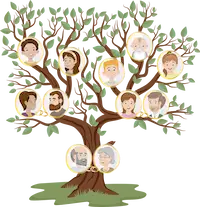

Brenda Basilico
About Me

Hello! I am a programming student in WDD 131. I love learning how to create dynamic websites. In my free time, I enjoy doing family history and spend time with my family
My Genealogy Hobby
Genealogy is one of my favorite hobbies. I am fascinated by discovering my family roots and connecting with my ancestors. It's a journey of discovery that has allowed me to learn more about my history and identity.